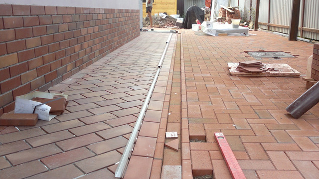
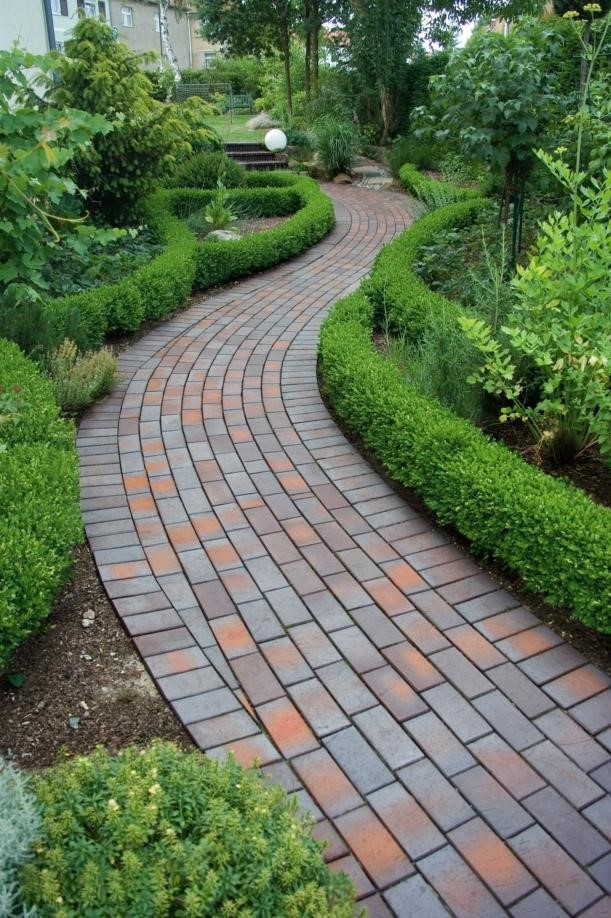

В останні роки тротуарна плитка активно використовується у благоустрої не тільки площ і мікрорайонів, але і приватних будинків.
Нею викладають теплиці, тераси, садові доріжки, двори, зони відпочинку. Завдяки великій різноманітності форм,
розмірів і кольорів з допомогою плитки вдається реалізувати самі сміливі дизайнерські ідеї. Крім того, вона
проста в монтажі і обслуговуванні, надійна, витримує перепади температур і підвищену вологість
У Івано-Франківській області використовують тротуарну плитку з різних матеріалів. Найдоступніша за
ціною - бетонна. Вона ж і сама витребувана. Дорожче коштує полімерпіщана, а на вершині цінового айсберга
- клінкерна.
Бетонну тротуарну плитку в промислових обсягах у нас випускають великі заводи з відмінними один від одного виробничими
потужностями і лініями. Є підприємства, на яких використовуються найсучасніші импортні технології і матеріали,
весь процес автоматизований і комп'ютеризований. Тим не менш ступінь оснащеності виробництва серйозно не
впливає на рівень цін. Так, наприклад, дуже популярний у населення сірий вібропресований тротуарний ♦Цегла»
(60х200х 100 мм) коштує від 290 до 350 руб./кв. м. Більш складні форми, такі як «Котушка», «Хвиля» або ♦Старе
місто», на ціну не впливають, чого не скажеш про кольори. Сіра плитка має натуральний колір, а для червоної,
чорної або жовтої використовуються спеціальні пігменти. Але колір і форма бетонної плитки ніяк не впливають
на її довговічність, що, в першу чергу, і повинно хвилювати споживача.
- При виборі бетонної плитки насамперед треба звернути увагу на марку виробу, - радить керівник виробництва
*Комунальник-спецбуд» Роман Яремків. - Незважаючи на зону, в якій буде покладена плитка, в наших погодніх
умовах раджу брати її з маркою не нижче 400. Коли марка бетону висока, то не треба турбуватися за морозостійкість
і водопоглинання. При правильному укладанні така плитка прослужить десятки років. Чим вище марка, тим він
дорожче (на 50-100 руб. - Прим, редакції), але тут не слід економити. Другий важливий момент, на який варто
звернути увагу, - товщина плитки. Якщо це доріжка для пішоходів, то можна взяти плитку товщиною 6 см, якщо
паркувальна зона для легкових автомобілів - 6-8 см, якщо ж по ній поїдуть вантажівки 8-10 см. Це викличе
подорожчання виробу, адже на його виготовлення піде більше сировини. Так, плитка ♦Цегла» товщиною 6 см буде
коштувати у нас 300 руб., товщиною 8 см - 400 руб., 10 см - 500-550 крб. інакше плитка швидко стане непридатною.
Часто продавці не розповідають про такі нюанси покупцям, не показують їм сертифікати на вироби, а
саму вигідну ціну пропонують на найнижчу марку бетону. - Ще один важливий показник, від якого залежить термін
служби тротуарної плитки, - морозостійкість, - вважає інженер відділу продажів Василь Яремків. - В наших
погодніх умовах морозостійкість повинна бути не нижче 150 Р.
Це гарантія того, що плитка не почне лопатися у відлигу після холодної зими. Ідеальна ж бетонна плитка
повинна мати морозостійкість Р 150 і марку М 400. Вона не буде дешевою. Однак у нас в області в основному
виробляють плитку » з маркою 300. Якщо показник морозостійкості при цьому високий, то вона прослужить довго.
Виробнича компанія «Европлитка» виготовляють бетонну плитку методом вібропресування. Група компаній
«Нове місто*, виробниче підприємство ♦Асбі*, використовують також і метод вибролиття. Він більш трудомісткий,
тому ві-бролитой «Цегла» при рівних технічних показниках може виявитися дорожче вібропресованого. Хоча технології
відрізняються, склад виробу один: пісок, цемент, пластифікатор і барвник для кольорової плитки.
НОВИНКА НА РИНКУ Полімерпіщана плитка є новим будівельним матеріалом і з'явилася на Івано-Франківщині
порівняно недавно. Її виробляють у нас в області.
- Поки нашою плиткою більше цікавляться приватники, і вона серйозно поступається бетонним «побратимам*
в обсягах продажів, хоча і має перед ними ряд переваг. Вона більш довговічна, практична, морозостійка і не
руйнується під впливом маги, оскільки в її складі присутні пісок і полімери, а цементу немає взагалі.
Полімерпіщана плитка витримує значні навантаження і застосовується для мощення тротуарів, стоянок,
доріг. Однак розмаїття форм в цьому варіанті немає - квадратна плитка 250x250 мм або 330x330 мм. Кольори
- червоний, зелений, жовтий. сірий, чорний. Коштує від 400 до 500 руб. за «квадрат*. Таку плитку легше перевозити
і монтувати, ніж бетонну, з-за меншої ваги. КЛАСИКА ЖАНРУ

Найдорожчий за ціною - тротуарний клінкер. З урахуванням його якісних характеристик нічого кращого для мощення прибудинкової території просто не існує, стверджують професіонали. Клінкерні тротуарні цеглини, а ця плитка тільки такої класичної форми, коштують від 1500 руб./кв. м. Комусь здасться, що клінкер економічно недоцільний і вигідніше замінити його більш дешевим матеріалом, наприклад, бетоном. Звичайно, вартість цього виробу набагато вище багатьох аналогів, однак термін його експлуатації в кілька разів вище, ніж у бетонного. А це економія на матеріалі, демонтаж старої і укладання нової плитки. І, звичайно, це перевірене часом якість і екологічність.  Тротуарний клінкер буває різних відтінків і кольорів - червоний, жовтий, коричневий, чорний. Але це все натуральні кольори, які утворюються при високотемпературному випалі глини. Жодних пігментів тут немає. Міцність тротуарного клінкеру досягається в процесі випікання глини - її молекули зв'язуються одна з одною так щільно, що вона стає як камінь. Ми возимо плитку з Німеччини, хоча є пропозиції і від Україні. У нашій області виробництва клінкерної тротуарної плитки немає.
| Бетонна плитка | |
| плюси | мінуси |
| Висока морозостійкість і міцність. Витримує значні навантаження на поверхні. Це універсальний матеріал, якому можна надати будь-який розмір, колір, малюнок. Стійка до стирання і не ховзька. | Не любить перепадів температур, підвищену вологість, механічні удари. |
| Полімерпіщана плитка | |
| плюси | мінуси |
| Не боїться агресивного середовища, плісняви та грибка. Термін служби більше 50 років, витримує температури від -70 до +90. Не змінює колір з часом. Не ховзається, не тріскається і не бється. Це екологічно чистий і легкий матеріал. | Під дією високої температури може дезо збільшуватись в обємі. |
| Клінкерна плитка | |
| плюси | мінуси |
| Має високу міцність (від М450), мінімальне водопоглинання (від 2.5%), підвищена морозостійкість (F 300). Не ховзається. Зносостійка. Не змінює свій зовнішій вигляд і колір з часом. Надійна і практична при нашій погоді. | Висока ціна. Додаткові витрати на доставку з Європи або з інших областей України |